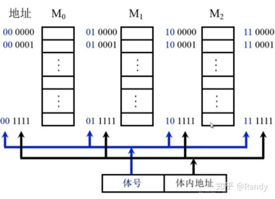

计算机组成原理
常见问题
透明是指看不到，和黑箱类似
IR、MAR、MDR 对各类程序员都透明
时序逻辑电路
类似于 RNN，其任意时刻的输出信号不仅和当时的输入有关，也和电路原来的状态有关
必然包含存储记忆单元，存储元件如各种寄存器（PC、IR、GPRs）等均为状态元件（时序逻辑）
组合逻辑电路
具有非记忆性，信号传输是单向的，输入和输出之间无反馈通路
ALU、多路选择器都是操作元件（组合逻辑）
表示频率时，单位一般是十进制，而表示数据时，k 通常是10进制，K 通常是二进制
一个汉字占2B，一个英文字母占1B
地址码大小决定地址空间大小，注意地址从 0 开始，故最高地址为$2^n-1$
PC 取指之后就已经+1了，执行某指令时PC已经指向下一条指令。+1表示本指令的字长（几B），其长度若是 CISC则必须视本指令长度而定
若同时给出了机器级代码、汇编代码，注意比较代码之间的差异从而找出一些关键信息
IR 长度 = 指令字长，PC = MAR = 地址线位数，MDR = 数据线位数=存储字长，ALU = 机器字长，机器字长和数据线位数不一定相等，存储字长为一次访存可取出的位数，与编址方式无关
PC最小位数是内存中指令的个数，若指令字长比编址单位大，则PC位数可以小于地址个数
”表项“仅仅是某一行，不是整张表
TLB 和虚拟地址相关，Cache 和物理地址相关，先查 TLB 和页表将其转化为物理地址，再拿着物理地址去查Cache或主存
页号、页偏移都是高位补零！！！必须将其化为二进制！！！
十六进制别忘了加 H，和内存有关的偏移量用十六进制更好（题目用的啥就用啥）
延迟写同样可用提升文件访问速度（减少IO），是将数据写入缓冲区，若又要访问则可直接从缓冲区读入，仅当缓冲区又要被分配时才写回
CPU 在读 IO 寄存器时，是无法进行 IO 写入的，因此每隔一个写满寄存器的时间，CPU查询一次就可以了
区分 Cache 总容量和 Cache 数据区容量
仔细看图，图中可能会展示有几个比较器、有几位组号、组号伸出了几个箭头，由此可得到映射方式、Cache有几组、每组有几行
有关流水线数据冒险的问题：抓住一个关键点，就是前一条指令总是快后一条指令一个小段；且五段流水线中只有1（IR）、5（写回寄存器）段和主存与寄存器有关（具体题目可能有差异）
有PC和补码表示的偏移量要计算地址时，地址为正、结果为正，可以直接用补码计算
$\%$和$/$的应用，前者是取模，实际上是取被除数低位的n个数字；除法是右移n位，丢弃掉低的n位，n为除数长度。例如求中间的页表索引：$(LA/2^{12})\%2^{12}$得到12位数字（11到23位）
仅当 Cache 缺失时 CPU 才需要访存，主存最低带宽和缺页率（访存频率）有关
中断处理为最底层，总是最后调用
补/unsigned的加减都可以用同一套电路实现，减法可以a+(-b)
目的操作数所在位置为存放结果的位置，intel格式第 1 个为目标
中断屏蔽字决定的是中断处理顺序
逻辑地址形成于链接（模块合并）
若先访问Cache后主存，可算 全命中时长+缺失时额外时长（主存传输到Cache）
如果题目给了PC的计算公式，要看清楚！若转移指令偏移量为8位补码，最低表示-128，但PC已+1，故最多往后跳转127条指令。转移指令地址=$(PC)+1+偏移量*指令长度$，不同题目转移指令地址不一定相同
存储器由数个NxM位DRAM芯片组成，则数据线就是M根，而地址线由N决定，且采用复用技术减少一半，和芯片个数无关。片选线和芯片组成的个数有关
CPU速度提高50%，和提高100%是不同的
指令流水线中，某条指令的某一段被阻塞，后续所有指令均阻塞，比如前一条的ID阻塞，则后一条的IF也被阻塞。流水线注意看题目的说明，可能与教材有区别
CPU时钟周期以最长时间部件+寄存器延时决定
short 类型是有符号的
机器指令+微指令，都能理解并直接执行，但微指令不算计算机语言
注意页的大小，1KB 和 4KB 经常看走眼
带宽永远是理想状态、一直传数据的极限传输率
概述
冯·诺依曼机基本思想：存储程序，即按地址访问并顺序执行指令
以前的计算机以CPU为核心，现代计算机以存储器（内存）为中心，使I/O操作尽可能绕过CPU
五大部件
输入、输出
存储器
存储体
由许多存储单元构成
MAR 地址寄存器
用于寻址，其位数和存储单元个数有关，也和 PC 长度相等
MDR 数据寄存器
用于暂存数据，长度和存储字长相等
运算器
ALU 算术逻辑单元
ACC 累加器、X 操作数寄存器、PSW 程序状态寄存器、IX 变址寄存器、BR 基址寄存器、MQ 乘商寄存器
用于算术运算和逻辑运算
控制器
PC 程序计数器
自动+1，用于存放当前欲执行的指令地址
下一条指令总是由PC给出（包括转移指令）
IR 指令寄存器
其内容来自主存的 MDR
OP(IR) 送至 CU，用于生成微操作命令，Ad(IR)送往MAR，用于取操作数
IR长度等于指令字长
CU控制单元
用于接受OP，生成微操作命令
计算机软件
系统、应用软件，软硬件逻辑等价性
数据库管理系统是系统应用，数据库系统是它的延伸，不是系统应用
编写操作系统、编译程序的是系统程序员
三个级别的语言
机器语言
二进制，是计算机唯一可直接识别可执行的语言
汇编语言
用英文单词或缩写代替二进制的指令代码，注意它不是高级语言
使用汇编程序（汇编器）将汇编语言翻译成机器语言
高级语言
通常需要先编译成汇编语言再汇编成机器码
或直接解释为机器语言程序
解释不会生成文件
层次结构
高级语言层
面向用户
在此之上还有应用程序层
汇编语言层
用汇编语言编程
操作系统层
位于软硬件交界处，机器语言解释操作系统
软硬件之间的借面就是指令集体系结构 ISA
传统机器语言层
微程序解释机器指令
这一级往下是硬件层
微程序机器层
机器硬件直接执行微指令
工作原理
存储程序工作原理
程序执行前将程序的指令和数据送入主存
指令和数据以同等地位存储在存储器中，形式上没有区别，但计算机应该能区分它（从指令执行的不同阶段区分）
一旦程序开始执行，就无需干预
源程序到可执行文件
预处理阶段
处理 # 开头的命令，生成 .i 为扩展名的文件
编译阶段
编译器编译，生成汇编语言原程序 .s
汇编阶段
汇编器将汇编语言翻译成机器语言，生成 .o 文件
链接阶段
将多个 .o 文件和标准库函数进行链接生成可执行文件
程序执行过程的描述
必须依靠操作系统的支持（内核）
指令执行过程的描述
取指令
PC->MAR->M->MDR->IR
根据 PC 取指令到 IR
分析指令
OP(IR)->CU
指令译码并送出控制信号
执行指令
Ad(IR)->MAR->M->MDR->ACC
取数送到ACC中，且PC+1
性能指标
字长、主存容量、数据带宽、基准程序等
时钟周期以相邻状态单元之间的组合逻辑电路的最大延迟或指令流水线每个流水段的最大延迟确定
运算速度
吞吐量：单位时间内能处理请求的数目，取决于信息能多快输入内存，因此主要取决于主存存取周期
主频：时钟周期的倒数
CPI：执行一条指令所需的时钟周期数
MIPS：每秒执行多少百万条指令
MFLOPS、GFLOPS、TFLOPS、PFLOPS、EFLOPS、ZFLOP，从10的6次方一直到10的21次方，每个隔了10的3次方。MFLOPS表示每秒多少百万次浮点运算（TPEZ）
数据的表示与运算
数制与编码
二进制 0b、八进制 0c、十六进制 0x，这些符号是放在数前面的，若没有这些符号而在数的末尾有B、O、H，同样是表示这些进制
带符号数常以十六进制存储
一个进位数的大小就是各位数码按权相加
任意一个二进制小数可以用十进制表示，但反过来不一定，如0.3
进制的转换
二进制化8/16进制：以3/4个数为一组，分别化为十进制，最后拼接起来
有小数和整数的，分别处理整数部分和小数部分
8/16进制化二进制：每个数化成3/4位二进制，最后拼接起来
任意进制化十进制：各位数码和权值相乘，小数则是负的权值
十进制化任意进制
整数部分采用除基取余法
最高位在最下面
小数部分采用乘基取整法
最高位在最上面，从上到下，乘积=1时停止
定点数的表示
整数、小数表示
无符号
有符号数和无符号数同时参加运算，均视为无符号数
有符号
原码
表示范围关于原点对称，有±0
正数原、反、补三码合一，负数反码为除符号位原码各位取反
补码
负数的补码为反码+1
由$[X]_补$求$[-X]_补$：连同符号位取反再末尾+1（正负都是）
0 的表示唯一，负0变成了$-2^{n-1}$，补码全1表示-1
补码首位能直接运算，不影响最后的结果
变形补码
又称模4补码，和补码除了符号位外都一致
双符号位，但只存储1位
00表示正，11表示负，01和10表示溢出
负数的补码，其数值部分越大，就越接近于0
移码
补码的符号位取反即得移码（正负数都是）
只能表示整数，0 的表示唯一
移码全0表示最小值$-2^{n-1}$
原码反码表示的区间数轴对称，补码移码则不是
无符号整数（unsigned int）的表示
没有符号位，因此表示范围更大
可用无符号整数进行地址运算，或用其表示指针
带符号整数的表示
将符号数字化，计算机中用补码来表示带符号数
注意：若选择题要判断 x 的正负，不能忘记 0 这个特殊存在
定点数运算方法
部件
一位全加器
有加数$A$、加数$B$及低位的进位$C_{i-1}$共三个输入
有本位和$S$、向高位的进位$C_i$共两个输出
和表达式$S=A(XOR)B(XOR)C$
这里 XOR 表示异或操作，用带圈的加号表示
进位表达式$C_i=AB+(A(XOR)B)C_{i-1}$
串行进位加法器
n个全加器相连
每级进位直接依赖于前一级的进位，即进位信号是逐级形成的
并行进位加法器
在全加器的进位表达式中，$AB$ 称为进位产生函数，$A(XOR)B$ 称进位传递函数
是一种并行加法器
带标志加法器
溢出标志表达式$OF=C_n(XOR)C_{n-1}$，即最高位进位和次高位进位不同则溢出
阵列乘法器等其它专用部件
硬件实现的运算，只需一个clock即可完成乘法运算，速度最快
编译器能将乘法运算转化为循环+加减法+移位，因此可用实现乘法运算（软件实现），但速度慢
ALU 算术逻辑单元
核心是带标志加法器
可执行算术、逻辑和移位运算
注意：当A-B时，由于等价于A+[-B]，故要让B的补码包括符号全部取反再+1，实际上加法器的两个输出就是A和取反后的B，+1是作为低位进位的
ALUop 为控制信号，用于决定 ALU 功能，n位 ALUop 可有$2^n$种操作（本质是输入到多路选择器MUX中，将结果视为不同的形式，如无符号或有符号等）
ALU生成标志位时只负责计算而不管是否有符号：CF=1表示无符号数运算的溢出，OF=1表示有符号的溢出，相当于一次运算得到的结果可分别视为有/符号位数的结果
补码（带符号数）是连着符号一起算，因此结果的最高位就是符号标志SF
溢出判断：加法中，仅同正、同负两种情况可能出现溢出，OF逻辑表达式根据两个操作数、结果的最高位可得到
减法和加法类似，仅一正一负或一负一正才可能
带符号整数乘法，若 ALU 采用 64 位存储结果，则高 33 位若不完全相同（有0有 1）则表示溢出
移位运算
算术移位
对象是有符号数，符号跟着移动，但移位时符号必须保持不变
由于计算机都是补码表示数据，因此左移补0，右移补符号位（左零右符）
左移出的符号位不同于新符号位，则发生溢出，因此补码左移的前提是最高位与符号位相同；右移移出1则影响精度
变形补码只有低位符号参加移位，高位符号是真实符号
逻辑移位
视为无符号数，均添0
高位左移出1，则溢出
循环移位
高位放到低位，低位放到高位
大循环：带进位标志位 CF 的循环移位
小循环：不带 CF 的循环移位
适合高低位数据的互换
加减运算
补码加减法
加法，则两数直接相加
减法，得到加数的负值的补码后再相加
无符号数加减法完全一致，其减法视为减去一个正数补码
加减运算电路
第二个输入端 Y 加上n个反向器实现取反，再加上一个二路 MUX，用 sub 信号决定是输入 $Y$还是$\overline{Y}$（同时sub作为低位输入到加法器）
ZF：均有意义
OF：有符号才有意义，结果等于符号位进位与最高数位进位的异或。因此某种意义上说，无符号不会发生溢出（实际上也会溢出）
SF：有符号才有意义
CF：无符号才有意义。减法时 CF=1 表示有借位0。加减法综合$CF=Sub⊕C_{out}$
原码加减法
溢出判别
仅当两个符号相同的数相加或符号相异的数相减才可能产生溢出
无论是单符号位还是双符号位，溢出判断必须有溢出判断电路，用异或门实现
采用一位符号位
若参加运算的操作数符号相同，但结果符号不同，则表示溢出
溢出逻辑表达式$V=AB\overline{S}+\overline{AB}S$，S为结果符号，A、B为操作数符号
采用双符号位
即模 4 补码，01表示正溢出，10表示负溢出
双符号位只能便于检测加减运算中的问题，但不能避免溢出
仅在 ALU 中是双符号位，存储时仅是单符号位
溢出表达式$V=S_1⊕S_2$
采用一位符号位，根据数据位的进位情况判断
若符号位的进位与最高数位的进位相同则没有溢出，否则溢出
逻辑表达式$V=C_{n-1}⊕C_n$
因为加减总化为加法，而此时两个符号相异是不会溢出的；若相同，则结果的符号位也必相同，不可能出现负+负结果为正吧？
若最高位进位了，符号位没进位，意味着必然是两个0+0的符号变成了1，故正溢出；若最高位没进位但符号位进位了，表示1+1变成了0，也是出错的
乘除运算
原码乘法（逻辑右移-累加）
先异或算符号位
剩余部分视为无符号数，按二进制乘法计算结果
乘法电路
控制逻辑 $C_n$ 控制右移计数，初始为32，每次右移-1
乘积寄存器 P 和乘积寄存器 Y 拼接成64位，被乘数放在Y中，P 初始全为0，ALU 控制 P 和乘数寄存器 X 做加法，并将结果送回 P，然后右移。Y 被移出的最低为被送到控制逻辑以决定被乘数是否加到 P 上面
因为加法可能产生进位，因此设置一个进位位 C 指向 P
溢出判断
两个 int 相乘，若高32位每一位都相同且等于32位的符号位，则不溢出，否则发生溢出
两个 unsigned，乘积高 32 全为0则不溢出，否则溢出
原码除法（逻辑左移-累加）
先异或求商的符号，之后符号不参与运算，视为两个无符号数相除
除法统一为 2n 位被除数除以 n 位除数，得到一个 n 位的商。由于相除时为无符号数，故小数为低位添0，正整数为高位添0
手算二进制除法，本质上和十进制的基本一致
计算机内部的实现，需要加减，因此是以补码的形式实现的
除法运算电路
余数寄存器 R 和 商寄存器 Q 拼接成64位，用于存放被扩展的被除数，控制逻辑计数器 $C_n$ 控制左移次数，初始为 32。每次 Q 的最低位被上商
32 位 ALU 两个输入分别为 余数寄存器 R 的32位和 除数寄存器 Y，根据是否够减控制连接的开断
两个32位 int 相除，只有$-2^{31}/-1$（补码）这一种情况会发生溢出
注意，两个int相除，如果接收变量是int，那么结果就会把余数的小数截取掉
C语言整数类型及类型转换
有、无符号整数
char本质就是 8bit 的 unsigned int
不同字长整数
无符号用 0 扩展，有符号则用符号位扩展
纯小数，无论负数还是正数的补码都用 0 扩充（纯小数补码总是 0 补充）
数据的存储和排列
大端、小端方式存储
大端是最高有效字节放在前面顺序存储数据，而小端是最低位在前面（单位字节）
小端存储顺序和原顺序相反
边界对齐方式
对齐是一种空间换时间的思想，能适应指令流水
按寻址方式和存储字长决定，若无说明默认存储字长为32位
一般一行就是一个存储字长，当本行数据占不满而下一个数据又太大时，填充后面的空间。如1个char和1个short，则一行为：char、填充、short
浮点数
表示
表示格式
数符（1位）：表示正负
阶码（7位）
移码表示，即存储的是移码，将其减去偏置才是真正的值
偏置是$2^{n-1}$，这里偏置为 64。偏置约为阶码表示最大数的一半
尾数（24位）
原码表示，因此现代计算机仍然要考虑原码加减运算
如果尾数用补码表示，则符号位与最高位不同才是规格化数（即负数最高位必须是0）
表示范围
表示范围关于原点对称
上溢会出错，下溢则当作机器0来处理
规格化
左规和右规
均是算术移位
右规时只需进行一次，左规可能多次
尾数决定了浮点数的精度，规格化使得尾数最高位是一个有效值，从而提升了精度
注意其规格化和 IEEE 标准的规格化是不同的，IEEE规格化最高有效位是个位，这个的最高有效位是第一个小数位
若浮点数基数为 4，则保证小数点后两位不全为 0
IEEE 754标准
规格化数
32位：1位符号位，8位阶码，23位尾数
具有一位隐藏位
注意这个隐藏位是直接移动到整数位的
阶码取值范围：1~254
64位：1符号位，11位阶码，52位尾数
偏置值为127，即$2^{n-1}-1$
阶码取值范围为1~254，故最小规格化正数为$2^{-126}$
注意其规格化和一般浮点数的规格化不同，最高一位移动到了小数点前，并隐藏起来
尾数用原码表示，阶码用移码表示
非规格化数
是阶码全 0 但尾数不为 0 的数
偏置值固定为 126，且隐藏位为 0 而不是 1，其它方面和规格化数完全一致
特殊数
阶码全0且尾数全0：表示数值0
仍然有正0和负0
规格数无法表示0和非常接近0的小数
阶码全1且尾数全0：表示无限大
符号位0和1分别表示正/负无穷
非数NaN：阶码全1且尾数不为0
定点、浮点表示的差异
范围、精度、运算、溢出
化为IEEE 754标准存储
将数化为
1.xx * 2^k的形式，保证小数点前的第一位是 1，k可正可负127+k 就是阶数
再将 xx 化为二进制即是尾数（小数点在尾数的第一位之前）
加减运算
对阶
使两个数阶码相等
小阶向大阶看齐，因此不存在阶数减小的情况
若大向小看齐，尾数左移最高有效位被移出会使结果出错
对阶不会产生上下溢（有运算时才可能发生）
尾数求和
尾数相加减
规格化
对于原码尾数，只需看整数位是否为1；补码尾数，符号位与整数位是否相反，相反则已规格化
舍入
对阶和右规都可能要舍入，舍入不一定产生误差
方法
0舍1入法
丢弃的最高位为1就在末尾+1
可能发生尾数溢出
恒置1法：最后一位恒置1
截断法：直接截断，丢弃后面所有位
溢出判断
超过了阶码表示的范围
以阶码是否发生了上溢来判断
指数下溢，当作机器0来处理
有些题目指定尾数或阶码用补码表示，通常可采用双符号位，直到化成
00.1xxx或11.0xxx，且阶码不需要减偏置
C语言中的浮点数类型
int转换成float：有精度损失
double转换成float：有精度损失且可能会溢出
int或float转换成double：可以精确转换
float或double转int：会舍入，且大数的转换可能会溢出
编码位数一定，浮点数和定点数表示的数据个数是一定的，浮点数不比定点数多
存储系统
存储器的分类
按层次
主存、辅存、Cache
按存取方式
RAM、ROM、串行访问存储器（磁带、磁盘、光盘等）
双端口存储器有两套独立的读/写接口，各自具有地址译码器，可同时读同一单元而不冲突
性能指标
存储容量
$存储字数 * 字长$
存储速度
存取时间：启动存储器到读出数据的时间
存取周期：两次存取之间的时间间隔，机器周期往往由存取周期决定
存取周期大于存取时间
多层次的存储系统
为了解决容量、速度、成本三者之间的矛盾
主存和 cache 之间的数据调动由硬件完成，对所有程序员都透明
主存和辅存之间的数据调动由硬件和OS共同完成，对应用程序员透明（缺页调页）
主存
主存主要由 DRAM 实现，也有 ROM；SRAM常用于Cache
RAM 属于易失性存储器，只要断电就没了
SRAM 工作原理
非破坏性读出：信息被读出后不需要再生
DRAM 工作原理
利用栅极电容上的电荷来存储信息
即使不读出、不断电，电荷也只能维持1-2ms，必须刷新才能保证信息不消失
三种刷新方式
集中刷新
在一个刷新周期内，用一段固定的时间（一般是一个存储周期），对存储器所有行进行再生，这段时间称为死时间或死区，不能访存
分散刷新
把每行的刷新分散到各个工作周期中
没有死区，但增加了系统的存取周期
异步刷新
前两种方法的结合，能减少死区时间而减少刷新次数，提高了效率
DRAM一般按行刷新，故行少一点更好
DRAM刷新只需要一个存储周期，刷新本质就是重新写入，刷新时内容并不会变化
注意：DRAM默认采用地址复用技术，而SRAM不采用
地址复用的本质是将地址线分别作为选择行和列的线，因此是取行选择线和列选择线当中的最大值，仅当两者相等时才有“地址线减少一半”
读写信号
WE 读写信号，CS 片选信号，RAS 行选通信号，CAS 列选通信号
注意字母上面都有横线（应该是表示低电平有效？）
存储器的内部结构
存储体
又称存储矩阵，由行选择线 X 和列选择线 Y 来选择访问单元，存储体相同行或列上的位被同时读出或写入
行缓冲的大小和一行的比特数相等
地址译码器
用来将地址转化为译码输出线上的高电平，驱动读写电路
I/O控制电路
片选控制信号
必须选中某个存储字所在的芯片而不选择其它芯片，是地址线的高位，数量根据片选方法而不同
若采用地址复用技术，则可不要片选线，加上行选通和列选通线，并将地址线减少
读写控制线
做题时默认读写共用一根线，若没有选项就认为读写各一根线
芯片的引脚数就是线的根数
ROM
RAM和ROM都是随机访问的，因此随机访问不一定是RAM，也可能是ROM
具有非易失性，可靠性高，掉电也不丢失
种类：MROM、PROM、EPROM、FLASH、SSD
EPROM可以多次改写，但不能作为 RAM 使用
主存的基本结构
主存的读写
主存中含有 ROM
多模块存储器
是一种空间并行技术，利用多个结构相同的存储体并行工作来提高吞吐率
分类
单体多字存储器
存储器中只有一个存储体，每个存储单元存储 m 个字，总线宽度也为 m 个字。一次并行读出 m 个字，但地址必须连续且位于同一存储单元
碰到转移指令就效果不明显
多体并行存储器
由多体模块组成，每个模块有相同的容量和速度。每个存储体每一行只存储一个存储字长
判断存取周期时，需根据主存地址判断该变量的第一个字节存储在几号存储体中，一般情况下，只有位于不同存储体但是是同一行的地址可以同时取出，若占了3行则需要至少三次启动
高位交叉编制（顺序方式）

高位为体号，低位为体内地址
CPU总是顺序访问存储模块，不能提高吞吐率
模块内地址是连续的，存取方式是串行存取，是顺序存储器，不满足局部性原理
高位交叉可以一次性读出彼此地址相隔多个存储体的字
低位交叉编制（交叉方式）
低位为体号，高位为体内地址
每个模块按模 m 编址，程序连续存放在相邻模块中，满足局部性原理，可采用流水线的方式并行处理
连续存取m个字的时间$t=T+(m-1)r$，其中 T 为单个字的存取周期，r 为总线传送周期
此时速度瓶颈在 r，也就是总线速度上
注意画流水线图，每个流水的段数就是存储体的个数。连续读、重复 n 次的计算题尤其需要注意
同时启动方式：若所有模块并行读写的总位数等于数据线位数，则可以同时启动所有模块
主存与CPU的连接
连接原理
通过数据、地址、控制总线相连
有$2^n$次方个地址，就有 n 根地址线，再加上片选线。若采用了地址复用技术，则不要片选线且数量减半，最后+2
每个存储元有 m 位，就有 m 根数据线
控制总线（读写线）一般是一根，指出总线周期的类型和本次输入输出的完成时刻
容量的扩展
位扩展法
单独引出数据端，让 CS 和 WE 以及地址端都并联
单独引出就是变了的东西，如这里的数据端（字长变了）和下面的片选线（芯片个数变了），没变的都并联
增加存储字长，使得存储数据位数和 CPU 的数据线位数相等
字扩展法
单独引出片选线（CS），让 WE 和数据线以及部分地址线并联 - 芯片若采用字扩展，则必须采用多模块交叉编址的方式才能一次性输出扩展后的字，几体则和几个芯片组成一个字有关
字位同时扩展法

片选线和数据线都单独引出
位扩展类似于堆栈、字扩展类似于并排
2-4译码器就是译码片选法，2是片选线个数（地址线高位）
注意相比较于原始的方案，线的数量可能会改变，例如同样数量的芯片，位扩展后数据线位数增加，但芯片个数会减少即地址线数量减少（字选线数量不变，片选线减少）
地址分配和片选
CPU访问，必须先片选再字选
片内的字选通常是 n 条低位地址线完成的，$2^n$就是片内的存储字数；片选则是高位地址线
片选信号为低电平有效，即1 无效而 0 有效
片选信号的产生
线选法
类似于独热编码，当高位地址线的某一位为 0 时选中该芯片（注意这里不是 1 有效）
有几个芯片就有多少位
不需要地址译码器，线路简单，但不能充分利用存储器空间
译码片选法
二进制表示编号
用高位地址线通过译码得到片选信号
部分片选的译码
先根据片选电路写出信号的逻辑表达式（根据其串并联），然后根据信号的低电平有效判断片选。若最终信号无效，表示不进行片选，不进行片选的信号不属于该译码范围
存储器与CPU的连接
合理选择存储芯片
通常 ROM 用于存放系统程序、标准子程序和各类常数
RAM 为用户编程而设置
考虑芯片数量时，尽量使连线简单和方便
地址线的连接
存储芯片的容量不同，其地址线的位数也不同
通常将低位地址线用于字选，高位地址线用于片选
数据线的连接
CPU数据线数和存储芯片位数不等时，必须进行位扩展
读写命令线的连接
如果是单根，就是高读低写
如果是读写线分开了，则均为低电平有效
片选线的连接
若访存控制信号为低电平则片选
外存
磁盘存储器
构成
磁盘驱动器（就是磁盘）
核心部件是磁头和盘片组件
磁盘控制器
硬盘和主机的接口
主流有 SATA、IDE 等
具体划分
磁头、扇区、柱面、磁道等
磁道是一个圆环，扇区是该圆环的一部分
磁盘性能指标
记录密度
每个扇区数据量相等，因此内部的扇区记录密度更高
磁盘的容量
格式化后的磁盘容量更小
平均存取时间
$=寻道时间+旋转延迟时间+传输时间$
磁盘读写都是串行的
数据传输率
单位时间传输的字节数
若磁盘转速为r，每条磁道容量为N字节，则$D_r=rN$，注意单位
磁盘地址划分
驱动器号（硬盘号）-磁道-盘面-扇区
磁盘阵列RAID
将多个独立的物理磁盘组成一个独立的逻辑盘，分割交叉存储，可并行、更安全可靠
海明码、奇偶校验等多种校验方式
固态硬盘
基于闪存 Flash 技术，闪存翻译层充当了磁盘控制器
随机写很慢，因为要将这一块的内容整体移动，再擦除，才能写
速度相比磁盘更快，并有很多优点
有读写寿命，但平均磨损逻辑控制得非常好
Cache
局部性原理
空间
因为指令通常是顺序存放、顺序存储的，未来要用的信息很可能与现在使用的信息在存储空间上是临近的
时间
程序中存在循环，所以未来要用的信息很可能是现在正在使用的信息，也就是多次访问同一信息
Cache工作原理
Cache块（行）和主存块等长，是与主存交换数据的基本单位。而Cache与CPU交换与传送的单位都是字，Cache和主存传送数据也是以字为单位（传送都是字为单位）
Cache 行长指这一行能存放数据的长度
Cache 数据是主存中的副本，故存储器总容量中不该包含 Cache 的大小（主存不完全是外存的副本）
若Cache未命中且已满，则需要替换Cache的行（由硬件实现）
命中率、平均访存时间、性能提高及相关计算
注意采用主存 Cache 同时访问和先访问 Cache 后访问主存的性能提高是不同的
A[k]=A[k]+32，需要两次访存！故它和A[k]=32的命中率是不一样的
注意访问主存的次数就表示未命中。Cache失效率也就是未命中率
Cache中某单元的地址：块号+块内地址
地址映射
指把主存空间地址映射到 Cache 地址空间，即用主存地址访问 Cache 行
注意地址的结构和 Cache 行的结构的区别，主存地址结构为主存块号+块内地址
Cache 是以物理地址访问的，虚拟地址先查页表或TLB，再拿着物理地址来找Cache或主存，注意块与页进行区分
主存地址，本质上就是主存中第几个存储单元，如果是二进制表示则化为十进制即可，十进制直接可以计算
Cache 组号：如果已经有了地址，把组号那一部分拿出来然后直接化为十进制就是组号；若给出的是主存第几块，也就是十进制，则需化成二进制再算
直接映射
地址结构=标记+Cache行号+块内地址，其中标记+Cache行号就是主存块号
Cache 中需要增加标记（tag），用于指明这一块是主存的哪一块的副本。Cache 中每行也需要一个有效位
每个主存块只能装入 Cache 中唯一的位置
无需替换算法，$Cache 行号=主存块号 \% Cache总行数$
实现简单，但不够灵活，块冲突最高，空间利用率最低，命中率最低，判断所需时间最短，标记所占用的额外空间最少
访问 Cache 时先找到映射到的 Cache 行，再比较 tag 看是否一致，再看有效位为是否 1
全相联映射
标记+块内地址
主存块可以装入 Cache 中的任何位置，每行的标记用于指明主存的哪一块
速度较慢，成本高，常使用昂贵的相联存储器（按内容寻址）来实现。命中率最高，判断所需时间最长，tag 所占额外空间最多
组相联映射
标记+Cache组号+块内地址
每个主存块可装入固定组的任意一行，即组间采用直接映射，组内采用全相联映射。先按直接映射的方法找到组，再在组中一一比较标记，才能得到装入的Cache行号
Cache块的结构：标记+有效位+维护位（脏位）+替换控制位+数据。有的时候需要根据题目灵活变通，但标记和有效位是必须的
Cache 的比较器个数和主存能映射到多少行相等，若是全相联则每行都有一个比较器（并行比较），若组相联则等于几路，若是直接映射则仅有一个比较器
替换算法
直接映射无需考虑替换算法
随机算法
随机地替换Cache块，但未依据局部性原理
先进先出算法
选择最早进入的块进行调出，但未依据局部性原理，因为最早的块也可能是最常用的
近期最少使用LRU
是堆栈类算法，为每行设置一个计数器，计数值的位数和 Cache 组大小有关，即$2^N=每组行数$，N 为位数
命中时计数清零，未命中行的都+1。这里的行指同一组内的（组相联）或全体行（全相联）。
替换掉计数最大的行
最不经常使用算法
每行设置一个计数器，每访问一次就+1，替换掉计数最小的行
抖动
当集中访问的存储区超过 Cache 组大小时，命中率可能变得很低
写策略
写命中
全写法（直通法）
同时将数据写到 Cache 和主存
能保证主存数据的准确性，但增加了访存次数，在安全性要求高的时候可用
写缓冲：为减少全写法写入主存的时间消耗
回写法
仅写 Cache 不写回主存，仅当该块被替换时写入主存
需设置修改位（脏位）。减少了访存次数但有数据不一致的隐患
写未命中（要修改的单元不在Cache中）
写分配法
加载块到 Cache，并更新这个块
非写分配法
只写入主存，不替换 Cache 块
常常用写分配+回写法，全写法+非写分配法组合
三级缓存、指令 Cache 和数据 Cache 在 L1 时分离等新技术
虚拟存储器
将主存和辅存的地址空间统一编址，虚拟存储器具有主存的速度和辅存的容量，它对应用程序员透明
用户涉及到的只是逻辑地址（虚地址），需转化后得到物理地址
CPU使用虚地址时，由辅助硬件 MMU 进行转化，若需访问的内容在主存中，则变换后直接访问；若不在，则先调到主存再访问
由于辅存过慢，缺页的代价很大，因此采用回写法+全相联映射（提升命中）
如果一个数据存在于多个字节中，若无其他说明（如支持突发传输），那么每个地址CPU都要发一遍，存储器每次都要准备。如果是突发传输，则仅需传一次地址，一次准备数据即可传输完一组突发长度的数据
页式虚拟存储器
页表
以定长的页为基本单位，页表负责将虚拟地址转化到物理地址，位于内存中。页和物理页框大小相等
结构：页号、有效位、脏位、引用位（长期未使用的页面将写回外存）、物理地址
虚拟地址的结构：页号+页内地址，这里的页号是虚拟页号，可直接指示页表的第几个元素
页表基址寄存器存放页表的首地址，再根据页号找到某页的物理地址
页面长度固定，页表简单，但有内部碎片，且不适合保护与共享
页表中是含有页号这一项的，但页表是顺序存储的，由虚拟地址能直接指示页表的第几项，无需一一对比。但在 TLB 中由于仅是页表的部分项目，故必须采取一一对比的方法
快表TLB
利用局部性原理，把一些常访问的页所对应的页表项存放到Cache中
TLB一般采用全相联方式，此时每一项都有一个比较器
也有可能采用组相联，根据比较器个数可得到
也可能采用 LRU 替换等
TLB 表项仍然由页表表项组成，TLB 中的标记 Tag，就是其中的虚页号，即需要让虚页号与 tag 比较
具有 TLB 和 Cache 的多级存储结构
Cache 缺失由硬件处理，缺页由软件处理，TLB可由硬件也可由软件处理
Cache 中存在比较器，用来比较 Tag 的，位数和 Tag 相同，个数和 Cache 组中的行数相同（几路组相连就是几个，全相联看成一组）
TLB 比页表快是由于本身的特性，即Cache
TLB、Page、Cache三种缺失的组合情况
信息不在主存就一定不在 Cache
TLB 命中则 Page 一定命中（一定在内存中）
段式虚拟存储器
按程序的逻辑结构进行分段，段长因程序而异
段表结构：段号+装入位+段起点+段长
有逻辑独立性，便于编译、保护、共享等，但会留下外部碎片
段页式虚拟存储器
先按程序逻辑结构分段，再分页
虚地址分为：段号、段内页号、页内地址
兼顾页式和段式虚拟存储器的优点，可实现按段共享和保护
地址变换过程中需两次查表，开销较大
虚拟存储器与Cache的比较
相同
都为了提高系统的性能，两者都有容量、速度、价格的梯度
都把数据划分为小信息块
都有地址的映射、替换算法、更新策略等
都将较为活跃的数据放在相对高速的部件中，基本原理都是局部性
不同
Cache主要解决速度，虚拟存储主要解决容量问题
Cache全由硬件实现，虚拟存储器由硬件和OS共同实现
虚拟存储器不命中的损失更大
CPU 和 Cache 和主存都建立了直接访问的通路，但辅存和 CPU 之间没有通路
指令系统
基本格式
操作码+寻址特征+地址码
从 0 地址到多地址
多地址指令，其地址码等长
零地址指令，例如关机、空操作。零地址的运算类指令只用于堆栈计算机中
指令字长由op、ad位数、ad个数决定，和机器字长无关。只是为了方便一般两者是等长的
CISC 指令长度不同，取出时间亦有差异
按字节编址，则指令字长、存储字长必须是8的整数倍
指令执行的访存次数也和寻址方式、指令类型有关，取指令、取操作数、存结果都要访存。一地址直接寻址需要三次访存
定长操作码
最高位部分分配若干定长位来表示操作码
扩展操作码
字长一定，动态调整地址码和操作码的长度
不允许短码是长码的前缀
各指令的操作码不能重复
分析指令的寻址单元数，以及最大的指令条数
短操作码不能是长操作码的前缀，即短op会占用长op的条数，短op占用的那几位，长op不能使用
指令的个数由op的个数决定
指令的操作类型
数据传送
MOV 寄存器之间的传送
LOAD 从内存读取到CPU寄存器
STORE 从CPU寄存器写入内存
算术和逻辑运算
ADD加、SUB减、MUL乘、DIV除、CMP比较
INC加一、DEC减一、AND与、OR或、NOT取反、XOR异或
移位操作
算术移位、逻辑移位、循环移位
移位指令中，操作数1代表移一位即乘2，2代表移两位即乘4
转移操作
JMP无条件转移、BRANCH条件转移、CALL调用、RET返回、TRAP陷阱
循环语句是由转移语句实现的，同样是程序控制指令
寻址方式
指令中地址码不是真实地址，被称为形式地址
指令寻址
顺序寻址
PC自动+1得到
跳跃寻址
通过转移类指令实现
下条指令的地址的计算方法由本条指令给出
跳跃寻址的结果是修改PC值，所以下一条指令仍由PC给出
像 jmp、jgp 等都是有数据的，因为要给出下一条指令的地址
分为绝对地址和相对地址
绝对地址由标记符直接得到
必定非负
相对地址是相对于当前PC的偏移量
$下条指令的地址=本条指令地址+1+相对偏移量$
+1为本条指令的长度
数据寻址
表示如何在指令中表示一个操作数的地址
由于寻址方式较多，通常在操作码和地址码之间设置一个字段，用来指明寻址方式
多种寻址方式目的是扩大寻址范围，但增大了译码难度
隐含寻址
不明显给出操作数的地址，在指令中隐含操作数的地址，如单地址指令规定 ACC 就是第二个数
有利于缩短指令字长，但需增加隐含地址的硬件
是最简化的地址结构
立即（数）寻址
地址字段就是操作数，补码表示，又称立即数
不访问主存，执行时间短，但地址码的位数限制了立即数的范围
直接寻址
地址码即操作数的真实地址
直接寻址给出的操作数是地址，因此是unsigned int
简单，取操作数仅访问一次主存，但地址码的位数限制了寻址范围
间接寻址
地址码给出的是地址是存放操作数地址的地址
可以一次间接寻址或多次间址
可扩大寻址范围，但要多次访问
寄存器寻址
地址码指出寄存器编号，操作数在寄存器里
不用访存，速度快，地址码长度小，但寄存器有限
寄存器间接寻址
地址码指示寄存器编号，寄存器里放操作数的地址码
相对寻址
真实地址为(PC)+1+形式地址
形式地址也可称为偏移量，补码表示，可正可负
操作数的地址不固定，随 PC 的值而变化，便于程序浮动，广泛用在转移指令中
基址寻址
基址寻址器 BR+形式地址
面向操作系统，程序执行时 BR 的内容不变，而形式地址变化
可扩大寻址范围，有利于多道程序设计和浮动程序，但形式地址的位数较短
变址寻址
变址寻址器 IX + 形式地址
面向用户，程序执行时 IX 可变而形式地址不变
适合编制循环程序，也适用于处理数组
堆栈寻址
硬堆栈：寄存器堆栈
软堆栈：从主存中划出一段区域来做堆栈
堆栈结构中，操作数隐含在堆栈里，不需要地址
程序的机器级代码表示
相关寄存器
x86中，有 8 个 32 位的通用寄存器，除两个堆栈寄存器外，其余的使用比较随意
EAX-EDX，ESI、EDI
EBP、ESP
汇编格式的比较（408统考一般是 Intel 格式）
AT&T 只能用小写字母，Intel 不敏感
AT&T 第一个为源操作数，第二个为目的操作数，方向从左到右；Intel则是第一个为目的操作数。寄存器目标为目的操作数
81mov $100, %eax # AT&T格式，100->R[eax]2mov eax, 100 # Intel格式34movl %eax, %ebx # 长度为四字节（双字）的 R[eax]->R[ebx]5mov dword ptr ebx, eax67lea 8(%edx,%eax,2), %eax # R[edx]+R[eax]*2+8->R[eax]8lea eax, [edx+eax*2+8] # lea 指令在地址需要复杂计算时使用，和mov类似AT&T寄存器需加前缀
%，立即数加$，Intel都不加AT&T使用
()进行内存寻址，Intel使用[]AT&T复杂寻址格式
disp(base,index,scale)，Intel 的就是表达式AT&T在操作码后面跟一个字符代表操作数大小，b代表字节，w代表字，l 表示双字，1 word=16 bit；Intel格式中，在操作码后面显式地注明
数据类型 ptr
常用指令
数据传送指令
mov指令push指令：入栈，先 ESP-4 再入栈（指针直接指向栈的最后一个元素）pop指令：出栈，先出栈再把 ESP+4
算术和逻辑运算指令
add/sub：两操作数相加减，结果覆盖掉原目的操作数inc/dec：自加或自减imul：带符号整数乘法idiv：带符号整数除法只有一个操作数，即除数，被除数由
edx:eax拼接而成结果分为商和余数，商送到eax，余数送到edx
and/or/xornot：每一位都翻转neg：取负指令shl和shr- 算术左移和右移，第一个数为被操作数，第二个为移位的位数
控制流指令
jmp <label>无条件跳转到 label 所指示的地址
jcondition条件转移指令依据 CPU 状态字中的一系列条件状态转移
例如 jle 就是小于等于时跳转，jne 就是不等于时跳转
cmp/test指令cmp 用于比较两个操作数的值，实现方式是两数相减；test 是两个数逐位与运算
两者都只改变状态字，如溢出of、零标志zf等，不保存结果
常与条件转移指令搭配使用
call/ret指令是函数调用中最关键的两条指令，都是无条件转移指令
call 执行当前指令地址的入栈和跳转，ret 则相反
过程调用的机器级表示
在内存中划出一个栈区来实现调用，地址从高位向低位增长
调用子进程只需要保存 PC，不需要保存 PSW，但中断必须保存 PC 和 PSW
选择语句的机器级表示
CF 进位/借位标志、ZF零标志、SF符号标志、OF溢出标志
OF、SF 对无符号数没有意义（无符号数不存在溢出，尽管装不下了但根据CF=1可以确定结果是多少，用最高位CF=1表示超过最大值），CF 对带符号数没有意义（符号位不是进位而是溢出）
编译器通过条件码（标志位）设置指令和各类转移指令来实现跳转
循环语句的机器级表示
while、do-while 和 for 都可翻译成 do-while，而又进一步翻译成 goto 语句
CISC和RISC
RISC 指令长度固定，只有load、store指令访存，寄存器非常多，一定采用流水线技术，不用或少用微程序控制
CISC 也可能采用流水线技术
RISC 有利于编译优化，更能提高运算速度，能缩小芯片面积，便于设计降低成本
中央处理器
基本功能
指令控制：完成取指令、分析指令和执行指令的操作
操作控制、时间控制
数据加工、中断处理
基本结构
运算器：ALU、ACC、PSW（程序状态字寄存器）、通用寄存器组等
PSW 包含 ZF、OF、CF 等各种状态
控制器：PC、IR、MAR、MDR、ID（指令译码器）等
指令的执行
指令周期
CPU 执行一条指令的时长称为指令周期，也称工作周期，一个工作周期包含多个机器周期
机器周期一般由存取周期决定，常包含多个时钟周期，一般指令周期每个阶段执行时长都是一个机器周期
取指周期
根据 PC 取出指令放到 IR
访存目的是取指令
取指操作是自动进行的，控制器不需要得到相应的指令
不同长度的指令，取指操作可能不同，如单字、双字指令取指就不同
数据流
PC > MAR > 地址总线 > 主存
CU 发出读命令 > 控制总线 > 主存
主存 > 数据总线 > MDR > IR（存放指令）
CU 发出控制信号 > PC+1
间址周期（间接寻址）
访存，取操作数有效地址
JMP 无条件转移指令，没有间址周期
数据流
Ad(IR) (或MDR) > MAR > 地址总线 > 主存
CU 发出读命令 > 控制总线 > 主存
主存 > 数据总线 > MDR
执行周期
取操作数，并根据 IR 的 op 通过 ALU 产生结果
访存是为了取操作数
数据流：没有统一的数据流向
中断周期
处理中断请求
检测到有中断请求时才有这一周期，且只有这一周期才能响应非紧急的中断
访存是为了保存程序断点。也就是说四个周期都有CPU访存操作
数据流
CU 控制 SP-1，SP > MAR > 地址总线 > 主存
SP是栈顶地址，先改地址再存数据
-1 是因为地址从高到低增长，是把栈顶的地址送到主存，以便访问主存中的栈顶并存入数据
CU 发出写命令 > 控制总线 > 主存
PC > MDR > 数据总线 > 主存（程序断点存入主存）
CU(中断程序入口地址) > PC
指令周期中，每一个操作就是一个机器周期，而每个机器周期又由若干时钟周期组成
机器周期通常由存取周期决定
指令执行方案
单指令周期
所有指令都选用相同的时间来完成
以最长执行时间为时间基准，串行执行，CPI=1，一条指令用一个时钟周期，但主频非常低
多指令周期
串行执行，某指令需要几个周期就分配几个周期，CPI>1
流水线方案
指令之间并行执行，但在不同的执行步骤当中
数据通路
数据在各部件之间传送的逻辑路径，包括数据通路上流经的部件，描述了信息从什么地方开始，经过了哪些地方最后到了什么地方
功能：实现 CPU 内部的运算器和寄存器与寄存器之间的数据交换
结构
CPU 内部单总线方式
将所有寄存器的输入端和输出端都连接到一条公共通路上
1 个 clock 只能完成一个动作，而不能完成一条指令
每个时刻总线上只有一个数据有效，故ALU需要一个输入暂存器；若ALU不设置输出暂存器，其输出到总线后会反馈到输入端从而影响结果
结构简单，但冲突较多，性能较低
CPU 内部多总线方式
所有寄存器的输入端、输出端都连接到多条公共通路上，提高了效率
专用数据通路方式
根据数据和地址的流动安排专门的线路，避免使用共享总线，性能较高但硬件复杂
规定各部件使用大写字母表示，in 和 out 控制信号的输入和输出，如ACCin、Zout等
寄存器之间的数据流向
以 PC 寄存器为例：
(PC)>MAR，PCout 和 MARin 有效，PC内容 > MAR
通用寄存器
是 CPU 内的一组寄存器，既可读又可写
需要连接地址译码器进行译码
MUX
多路选择器，选择多个输入中的一个有效，是多输入单输出的组合逻辑电路
PC+1 也是需要经过 ALU 的，故 MUX 可以将一个输入固定为一条指令的长度，方便在指令顺序执行时快速+1
主存和 CPU 之间的数据传送
(PC)>MARPCout 和 MARin 有效，现行指令地址>MAR
为什么是现行指令而不是下一条指令到 IR？因为一条指令的周期是从取址开始的，即从取这条指令的第一步开始，就是这条指令的周期，这条指令就是现行指令
1>RCU 发出读命令，1是数字，R 代表读控制线（对应的还有 W 写控制线）
MEM(MAR)>MDRMDRin 有效
(MDR)>IRMDRout 和 IRin 有效，现行指令>IR
执行算术或逻辑运算
(R1)>YR1out 和 Yin 有效，操作数>Y
(ACC)+(Y)>Z（微操作）控制信号：ACCout 和 ALUin 有效，CU 向 ALU 发出加命令，结果>Z
简化为：ACCout，ALUin，“+”
(Z)>ACCZout 和 ACCin 有效，结果>ACC
以上三步不能同时执行，否则会引起总线冲突，因此该操作需要 3 个 Clock
数据通路结构直接影响CPU内各种信息的传送路径，数据通路不同指令执行过程的微操作序列也不同，关系着微操作信号形成部件
注意分析操作序列的 clock 消耗，传送以及能同时进行的，都只要一个clock
控制信号：当执行部件不需要执行时，信号为0，否则为具体操作，如 ALUop=sub、MEMop=read 等
控制器
硬布线控制器
由复杂的组合逻辑电路和触发器组成，其时序系统比微程序设计更复杂
CU 的输入信号
操作码译码后产生的指令信息
来源硬件：译码电路 ID
时序系统产生的机器周期信号和节拍信号
来源硬件：节拍发生器
来自执行单元的反馈，即标志
来源硬件：状态标志
另外，还接收来自控制总线的控制信号，如DMA请求、中断请求等
时序系统及微操作
一个节拍对应一个时钟周期
机器周期可视为所有指令执行的一个基准时间，可完成若干微操作，常以存取周期为基准。存取字长等于机器字长时，取址周期等于机器周期，一个机器周期可完成若干微操作
目标是一个时钟周期完成一条指令
微操作命令：与指令相关，且必须按次序发出
指令的三个周期：取指、间址、执行
CPU的控制方式
同步
系统有一个统一的时钟，所有的控制信号均来自这个统一的时钟，节拍时间通常以最繁琐的微操作为标准
控制电路简单，但速度较慢
异步
不存在基准时间，每个部件按自己的速度运行，通过应答的方式联络
速度快，但电路复杂
联合控制
大部分同步控制，小部分异步控制
微程序控制器
采用存储逻辑实现，解释机器指令的微程序
每条机器指令编写成一个微程序，每个微程序包含若干条微指令，每条微指令对应多个微操作命令即微命令
微操作=微命令->微指令（有地址）->微程序微命令是控制部件向执行部件发出的各种控制命令，是构成控制序列的最小单位
微命令是执行过程就是微操作，它们是对应的，一个节拍可执行一个微操作，即微操作是最基本的不可分割的操作。这里的微操作，就是
(PC)->MAR、Ad(CMDR)->CMAR这种微指令的构成：操作控制字段+顺序控制字段，前者类似操作码，后者提供下一条微指令的位置
通常一个微程序周期对应一个指令周期
组成
控制存储器 CM
相当于主存，用于存放微程序，用 ROM 实现
CM 中微程序的个数，等于机器指令数+取址、间指、中断等公共微程序数
微指令寄存器 CMDR
又称 μIR，类似于 IR，用于存放微指令，位数和指令字长相等
注意CMDR和MDR不同！！！而是类似于 IR
微指令计数器
决定微指令（而不是指令）的顺序，类似于PC
微地址寄存器 CMAR
类似于 MAR 的功能
微指令的编码
直接编码
无需译码，命令字段每个位都代表一个微命令，选用设置为1，不用就是0
直观速度快，但 n 个命令就要 n 位操作字长
字段直接编码
将微命令的命令字段分成若干小段，互斥性微命令组合在同一字段内，每个小段独立编码（多个小段表示的操作可并行），每种编码代表一个微命令
n 位某小段可表示 $2^n$ 条命令
每个小段都要留出一个状态，通常是全 0，表示本小段不发出任何微命令
需要译码，因此比直接编码慢
可以缩短指令字长
字段间接编码
一个字段的某些微命令需要由另一个字段的某些微命令来解释
可进一步缩短指令字长，但会削弱微指令的并行能力
微指令地址的形成方式
由微指令的下地址字段指出
根据机器指令的操作码形成
跟 PC 一样，CMAR+1
根据标志决定分支转移地址
微指令的格式
水平型微指令
上面三种微指令的编码方式，都属于水平型微指令
一条水平型微指令对应几个并行的操作
微程序短，执行速度快，但指令字较长
注意区分微程序的长度和指令的长度，这里是单条微指令长，但由于能表示多个操作，所以微程序短
垂直型微指令
采用微操作译码法，和机器指令的操作码类似
一条只能定义并执行一种基本操作
微指令短，工整，但速度慢，且微程序长
微指令格式：$\mu OP$+目的地址+源地址
动态微程序设计
能根据用户的要求改变微程序
必须有可写控制寄存器的支持，如EPROM
异常和中断
异常的概念
异常是 CPU 内部产生的意外事件，如除数为0、溢出、程序断点等
这里的内部产生是指由于 CPU 执行了这条指令产生了问题
异常也被视为中断（内中断）
Cache 缺失是硬件故障，不需要异常处理软件来处理
数据下溢将视作机器 0，不会产生异常
异常并不总是返回本条指令执行
异常的分类
故障Fault：指令引起故障
存储保护错：例如地址越界，缺页
处理之后返回本条指令执行
自陷Trap：预先安排的异常事件
自陷处理后，返回陷阱指令的下一条去执行
终止Abort：出现无法继续执行问题
例如除数为0
中断处理完成后，无法返回本条指令继续执行，而是直接终止执行
中断的分类
可屏蔽中断
通过 INTR 中断请求线发送
不可屏蔽中断
通过 NMI 线发送
异常和中断的区别
异常的检测由 CPU 自己完成，而中断必须通过中断请求线才直到哪个设备发生了何种中断
中断不和任何指令相关联
异常和中断的响应
关中断、保存断点和程序状态（PC和PSW）
识别并转移到相关处理程序
相关程序在内核中执行
中断由软硬件共同实现
软件识别方式：CPU设置一个异常状态寄存器，记录异常原因，OS使用统一的中断查询程序，按优先级查询异常状态寄存器，一个个处理
异常和中断响应非常类似，这也是为什么有时将两者统称中断
中断服务处理
保护现场、开中断、中断处理、关中断、恢复现场、开中断、中断返回
中断处理时是开中断的
指令流水线
处理机并行性的提升
时间并行
将任务分解，每个子任务在不同功能部件中执行，代表即流水线技术
只有任务密集型的应用才适合流水线技术，流水线技术对单个运算无法提升性能
空间并行
设置多个功能相同的部件，同时执行任务，代表即多核CPU
实现
数据通路与控制信号
每个流水段后面都要加流水寄存器，以让本段的执行结果让下一流水段也能使用
执行过程（取译执访写）
取指（IF）
从指令寄存器或 Cache 中取指令
译码/读寄存器（ID）
操作控制器对指令译码，同时从寄存器堆中取操作数
指令译码器 ID 仅在本过程中使用，取指和执行都不需要ID的参与
执行/计算地址（EX）
执行运算或计算地址
访存（MEM）
对存储器进行读写操作
写回（WB）
将指令执行结果写回寄存器
理想情况下，CPI等于1，即每个时钟周期都有一条指令完成
流水线冒险
结构冒险
即资源冲突，指令访存阶段时，同时访问同一存储器
解决
前一指令访存时，使后一个指令暂停一个时钟周期
单独设置数据存储器和指令寄存器，例如指令和数据分离的Cache
数据冒险
即数据依赖问题，下一条指令会用到当前指令的计算结果
是对流水线影响最为严重的冒险
分类
（没有）写后（才）读
RAW，读到的就是旧数据
按序流动的流水线仅会出现 RAW 而不会有其它数据冒险
读后写
WAR，没有先读后写，读到的就是错误的新数据
写后写
WAW，写的顺序出了问题，使数据出问题
解决
遇到的数据相关的指令暂停几个时钟周期，直到数据问题消失。可分为硬件阻塞和软件插入方法
设置相关的专用通路（数据旁路技术），不等前一条指令把计算结果写回寄存器，下一条指令也不读寄存器，而是直接从 ALU 中的计算结果作为自己的输入从而开始计算
编译优化，调整指令顺序
控制冒险
顺序问题，例如调用、转移指令，让 PC 断流
解决
分支预测，尽早生成转移目标地址
静态预测：预测条件不满足就继续执行后续指令
动态预测：根据程序执行的历史情况，动态地进行预测，准确率较高
加快形成条件码
预取转移成功和不成功两个方向上的目标指令
在分支指令中加入若干空操作
性能指标
$吞吐率TP=任务数/总时长$
当任务数 n 趋近无限大时，最大吞吐率为时钟周期的倒数
$加速比S=不使用与使用流水线的时间比$
n 趋近无限大时，最大加速比为流水线段数 k
高级流水线
超标量流水线
用度来表示层数
也称动态多发射技术，可乱序执行
设置多个相同的部件，实现指令并行+流水线
超长指令字
也称静态多发射技术
将能并行的指令组合成超长指令字
超流水线
尽量将流水段级数划分得更多
多处理机
SISD、SIMD、MIMD的概念
SIMD 单指令多数据，也称数据级并行技术，即一条指令处理多个数据
SIMD 在处理 for 循环最有效，在条件分支如 switch 语句时效率最低
向量处理器是 SIMD 的变体，在数值模拟等领域中性能较高
硬件多线程
细粒度多线程
交叉执行，可乱序执行，每个clock都可切换线程
粗粒度多线程
交叉执行，但仅出现了阻塞才切换线程
同时多线程 SMT
指令级并行+线程级并行
可以并行执行，本质上是复制了必要的线程资源让两个线程同时运行，可能会出现抢资源的情况
Intel 的超线程技术就是此类
多核处理器
真正意义上的并行
必须采用多线程技术才能发挥作用
共享内存多处理器 SMP
共享的单一物理地址空间的多处理器
分为：统一存储访问和非统一存储访问
总线
总线的概念
作用
为了减少线的条数
总线不能提高速度和并行能力，专线才可以
特点
分时：同一时刻只有一个部件可发送信息
共享：总线的每个部位可同时接受相同信息
总线分类
片内总线
芯片内部的总线，连接寄存器之间、运算器之间
系统总线
数据总线
双向传输总线，位数与机器字长有关
每一位都有一根数据线，即32位就有32根数据线
地址总线
单向传输总线，位数与主存地址空间大小有关
不仅可以选择主存地址，还有 IO 接口
控制总线
传输读或写信号，瞬时单向，总体上可视为双向
局部总线
能节省系统总带宽，主要针对高速设备
IO总线
用于连接中低速的 IO 设备，将低速与高速设备分离，提升性能
通信总线
也称外部总线，在计算机之间传输信息
系统总线的结构
单总线
不是只有一根线，而是所有设备都挂在一组总线上，允许任何设备之间直接交换信息
结构简单成本低
双总线
主存总线：CPU、主存和通道之间传输信息
IO 总线：外部设备和通道之间传输信息
三总线
主存总线、IO 总线、DMA 总线
提升了 IO 设备的性能，但系统工作效率低
常见的总线标准
SATA、PCI、USB等
PCI总线是系统总线，USB是设备总线，用于连接IO设备
总线一般都是串行传输的，串行总线就是一次传输有个数据
总线的性能指标
$总线带宽=总线频率 * 总线宽度(数据位数)$
总线事务
从请求总线到完成总线的一个操作序列，其时间称为总线周期
请求、仲裁、寻址、传输、释放五个阶段
传输阶段一般只能传输一个字长的数据
突发传送方式可以成组地传输数据，每个时钟周期都可传输一个字长的信息，一组传输完成后再释放总线，也能提升总线传输速率
总线定时
同步定时方式
采用统一的时钟来协调传输双方的关系
速度快，逻辑简单，但可靠性较差。适用于总线长度较短和部件之间存取时间比较接近的系统
异步定时方式
没有统一时钟，双方采用握手和挥手方式，传输时间按需分配
总线周期长度可变，能保证速度差距很大的设备传输信息。但比同步控制方式复杂，且速度更慢
每次握手传输一次数据
不互锁
主设备发出请求信号后，不必等到回复，而是过一段时间就可撤销请求，从设备同理
半互锁
主设备必须等到从设备的回复后才可撤销请求，但从设备不必等到主设备的请求撤销，就可撤销回答信号
全互锁
都需要等到对方的回复后才可撤销
高速和低速设备之间可同步也可异步，只是同步会限制高速设备的发挥
半同步总线可使用同步或异步定时方式，例如 PCI
输入输出系统
I/O接口
功能
IO 接口又称设备控制器，用于地址译码和设备选择、数据缓冲、信号格式的转换、通信控制
IO 设备不可能和总线直接相连，必须通过IO接口
基本结构
IO总线：数据线、地址线、控制线等
控制线仅发送读/写信号，地址线仅单向传输地址，其它均由数据线传输
接口和端口的区别
端口指接口电路中可读写的寄存器，若干端口加上控制逻辑才成为接口
I/O 端口及编址
CPU能对数据端口读写，对状态端口只能读，对控制端口只能写
编址方式
统一编址
当作存储器单元，不需要专门的 IO 指令，但会占用内存地址，且速度较慢
靠不同的地址码区分主存和外设
独立编址
又称 IO 映射方式，设置专门的 IO 指令来访问 IO 端口，编制清晰便于理解，但增加了控制的复杂性
IO 指令是机器指令的一种，其格式和通用指令格式有所不同
靠不同的指令区分主存和外设
无论主存还是外设，程序员都使用逻辑地址进行访问
I/O方式
程序查询方式
完全由 CPU 执行程序来实现
独占查询
CPU启动 IO 后，就必须停止程序的运行，并开始询问IO状态，直到外设准备就绪
CPU和IO串行工作，CPU存在踏步现象，花费了大量时间来查询，效率非常低
四种 IO 方式中，只有程序查询方式（独占）是 CPU 和 IO 串行的，其它三者都是CPU和IO并行执行
若无特殊说明，默认程序查询方式为独占查询
定时查询
周期性查询接口状态，其时间间隔和数据传输速率有关
必须在外设传输完端口大小的数据时访问端口，否则数据可能丢失
程序中断方式
程序中断的概念
中断是指再出现紧急情况或特殊请求时，暂停执行现程序，转而去处理特殊情况，然后返回断点处继续执行原程序
利用程序中断实现IO：CPU在程序中安排好在某个时间启动外设，随后继续执行程序，直到外设准备好并发出中断请求，则以中断的方式处理 IO
外设准备数据时间应当大于中断处理时间，因为若太快，计算机可能来不及取走缓冲的数据就又被写入了
中断情况下，外设的数据都要经过CPU，不和主存直接打交道
中断的工作流程
中断请求
INTR 可屏蔽中断线，NMI 不可屏蔽中断线
允许多个中断源
中断响应判优
通过硬件排队器实现
DMA请求 > NMI >内部异常> INTR
硬件故障 > 访管指令 > 程序性异常 > 外部中断 > IO 中断 > 重新启动
输入设备高于输出设备，高速设备先于低速设备
CPU响应中断的条件
中断源有中断请求
CPU 允许中断及开中断（异常和不可屏蔽中断不受此限制）
一条指令执行完毕（异常不受此限制）
中断响应过程
响应中断并转而执行中断服务程序，这些操作由硬件直接实现，称为中断隐指令
注意区分中断响应周期（机器周期的一个）和中断响应过程
执行过程
关中断
将中断触发器置 0
保存断点和状态到栈或特定寄存器中：PC、PSW
引出中断服务程序
识别中断源，并将对应的中断服务程序送入 PC
识别中断源分为硬件向量法和软件查询法
中断向量
中断向量即特定中断程序入口地址，而中断向量的地址则是地址的地址
CPU 响应中断后，计算出中断向量的地址，然后在中断向量表中取出中断向量，并送入PC
操作系统初始化时需要创建中断向量表
中断处理过程
关中断、保存断点、引出中断服务
这些是硬件实现的中断隐指令，也就是响应中断
保存现场和屏蔽字、开中断、执行中断服务、关中断、恢复现场和屏蔽字、开中断、中断返回
由中断服务程序完成
执行中断服务程序时是开中断，允许更高级的中断发生
多重中断和中断屏蔽技术
优先级高的（严格高于）中断有权中断优先级低的中断
中断屏蔽技术
每个中断源都有一个屏蔽触发器，1 表示屏蔽该中断，0 表示可以被该中断插入（1屏蔽）
比如有ABCD四个中断，若 A 的优先级最高，则 A 的屏蔽字为 1111，即没有可中断A的中断，A 处理时能屏蔽所有中断
中断屏蔽标志仅改变中断的处理顺序而不是优先级
DMA方式
特点
完全由硬件进行成组信息的传输，IO和主机并行工作，程序和传送并行工作
主存和 DMA 接口之间有一条直接的逻辑数据通路，降低了CPU负担，数据传送不经过CPU
仅在开始和结束时 CPU 要介入，仅在传送结束时产生中断
DMA 传送时接管 CPU 的系统总线：数据、控制、地址总线，即DMA控制器必须有控制总线的能力
多路 DMA 也可以用于多个慢速设备，即 DMA 不一定是快速设备
传输一个字占一个存取周期，也就是一个机器周期
DMA 不会破坏 PC 和寄存器的内容，故不需要保护现场
DMA 请求是由外设发出的，而 DMA 控制器发送总线上的请求
DMA 及其它方式均由驱动程序（直接和硬件打交道）设置传送参数
DMA控制器（DMA接口）的组成
主存地址计数器（存放主存地址）、传送长度计数器、数据缓冲计数器（DMAC）、DMA请求触发器、控制/状态逻辑、中断机构
DMA的传送方式
停止 CPU 访存
直到数据传输完毕时才回复 CPU 的控制权
周期挪用
当有 DMA 请求，且 CPU 想访存时，IO 设备挪用几个存取周期，传送完一个数据后立刻释放总线
DMA 和 CPU 交替访存
把 CPU 工作周期（执行一条指令的时长）分为两部分，分别供DMA和CPU使用
适用于 CPU 工作周期比主存存取周期长的情况
DMA的传输过程
预处理、传输、后处理
数据传输阶段完全由硬件控制，后处理中包含中断
DMA方式和中断方式的区别
DMA 请求优先级高于中断
中断方式需要保护和恢复现场，但 DMA 不需要
对中断的响应只能在指令执行完毕的中断查询周期中
中断传输需要 CPU 干预，而 DMA 方式不需要
DMA 仅进行数据的传输，中断有处理异常的能力
中断方式靠程序传送，而DMA方式靠硬件
通道控制方式
是 DMA 方式的发展，但却是一种程序控制方式
IO 通道也能执行指令（专门的指令）
通道程序存放在主存中，由通道从主存中取出并执行，且只能在具有通道的 IO 系统中使用